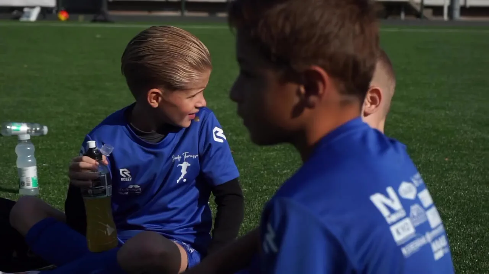
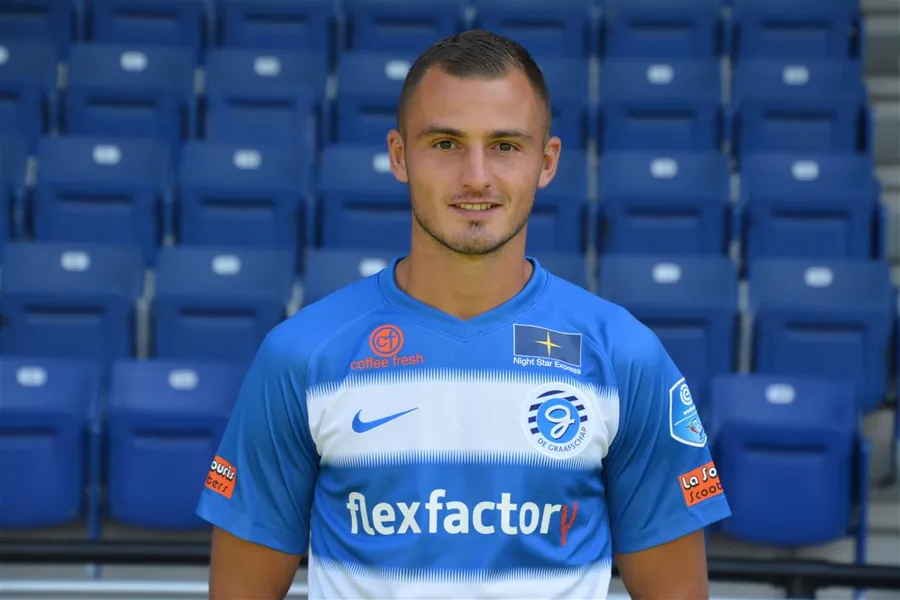
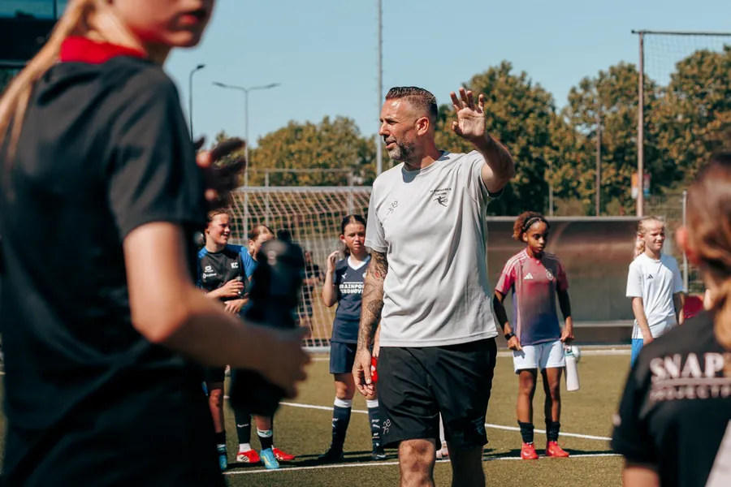
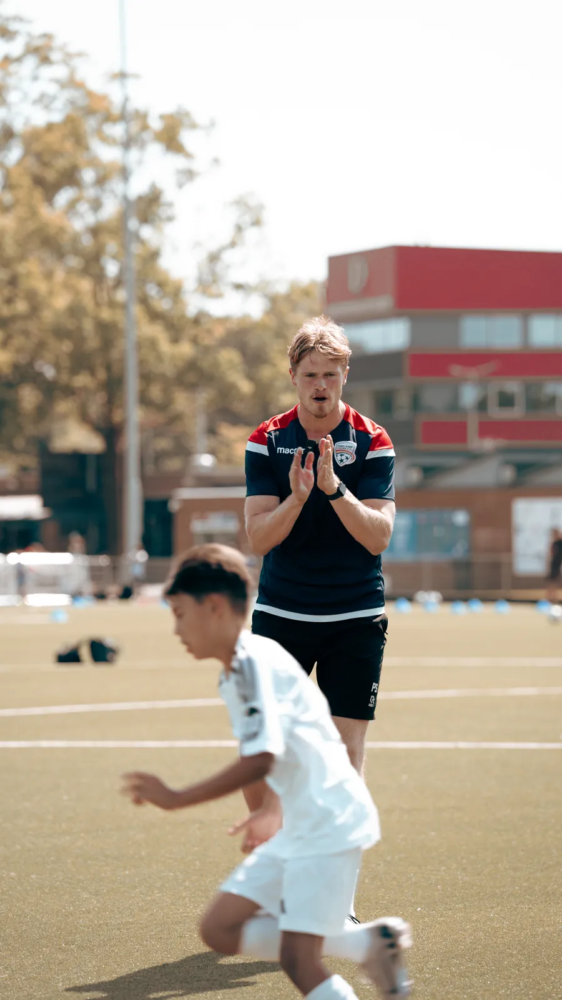
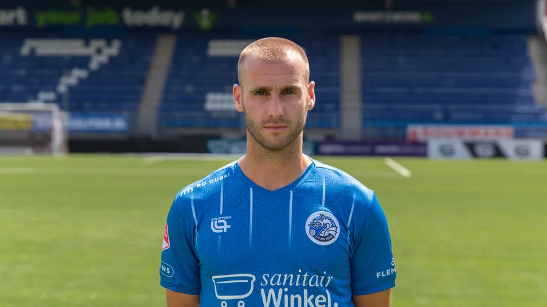
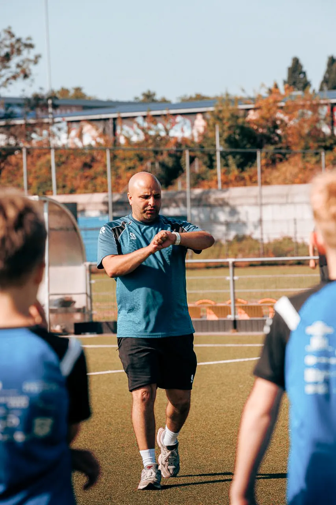

Jordy ThomassenOprichter en hoofdtrainer

Over Jordy Thomassen

Het verhaal
Jordy Thomassen werd op 15 april 1993 geboren in Den Bosch, voetbalde in de jeugd van BVV en brak door bij FC Den Bosch.
Daarna volgden RKC Waalwijk, Helmond Sport (waar hij in 2017/18 clubtopscorer werd), De Graafschap in de Eredivisie en een avontuur bij Adelaide United in Australië. Sinds 2021 speelt hij in de Tweede Divisie, bij De Treffers en Kozakken Boys.
Naast het voetbal begon hij zijn neefje te trainen op een veldje in de buurt. Er kwamen steeds meer kinderen bij. Vandaag trainen wekelijks honderden spelers bij de voetbalschool, met een team van meer dan dertig trainers. In 2026 koos Jordy bewust voor minder wedstrijddruk: "Mijn gezin en mijn voetbalschool worden steeds belangrijker."
Voetbalclubs kunnen bijna niet meer om hem heen.Brabants Dagblad, 16 juli 2026, over de groei van de voetbalschool
Het team
De trainers spelen of speelden in het betaald voetbal en geven die kennis door in taal die een kind snapt. Een greep uit het team.



Plus een keeperstrainer en een team van meer dan dertig trainers dat elke week op het veld staat. Wil je zelf trainer worden? Stuur een mail. De voetbalschool is een erkend leerbedrijf.
Clubs en partners
Naast de eigen trainingen in Den Bosch traint de voetbalschool jeugdafdelingen van clubs in de regio, en werkt ze samen met betaaldvoetbalorganisaties.

Deze clubs laten hun complete pupillenafdeling een seizoen lang wekelijks trainen door trainers van de voetbalschool.

Cycli van tien trainingen op vrijdagavond, open voor alle jeugdleden van de club. Vol binnen een paar weken.

De voetbalschool werkt samen met PSV en NEC. Spelers van de school liepen stage bij PSV, en scouts van FC Den Bosch en NEC kijken mee bij de talentendagen.
Deze bedrijven staan achter de voetbalschool


Ook sponsor worden? Mail Jordy

Kom kennismaken
De eerste training is gratis. Je hoort binnen 24 uur wanneer je kind kan meetrainen.
Wil je een gratis proefles plannen of heb je een vraag over de trainingen? Stuur een berichtje, je krijgt binnen 24 uur antwoord van het team.
Chat openen